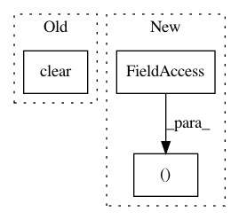

27e4a648a96c76de6b7ed24ea95ea76ee17f623d,pynets/registration/register.py,FmriReg,atlas2t1wmni_align,#FmriReg#Any#Any#Any#,773
Before Change
atlas_data = np.around(np.asarray(atlas_img.dataobj)).astype("int16")
img = nib.Nifti1Image(atlas_data.astype("int16"), affine=atlas_img.affine,header=atlas_img.header)
if len(img.header.extensions) != 0:
img.header.extensions.clear()
nib.save(img, aligned_atlas_t1mni)
gm_mask_mni_img = nib.load(gm_mask_mni)
if len(gm_mask_mni_img.header.extensions) != 0:
After Change
from nilearn.image import resample_img
aligned_atlas_t1mni = "%s%s%s%s" % (self.anat_path, "/", atlas, "_t1w_mni.nii.gz")
gm_mask_mni = "%s%s%s%s" % (self.anat_path, "/", self.t1w_name, "_gm_mask_t1w_mni.nii.gz")
gm_mask_mni_atlas_res = "%s%s%s%s%s" % (self.anat_path, "/", atlas, self.t1w_name, "_gm_mask_t1w_mni.nii.gz")
aligned_atlas_t1mni_gm = "%s%s%s%s" % (self.anat_path, "/", atlas, "_t1w_mni_gm.nii.gz")
uatlas_filled = "%s%s%s%s" % (self.anat_path, "/", atlas, "_filled.nii.gz")
os.system("fslmaths {} -add {} -mas {} {}".format(self.input_mni_brain, uatlas, self.input_mni_mask,
In pattern: SUPERPATTERN
Frequency: 4
Non-data size: 3
Instances
Project Name: dPys/PyNets
Commit Name: 27e4a648a96c76de6b7ed24ea95ea76ee17f623d
Time: 2020-01-02
Author: dpisner@utexas.edu
File Name: pynets/registration/register.py
Class Name: FmriReg
Method Name: atlas2t1wmni_align
Project Name: AlexEMG/DeepLabCut
Commit Name: 199f387b50df1f32ded6ac5d54b68f08f009661b
Time: 2019-09-19
Author: amathis@fas.harvard.edu
File Name: deeplabcut/generate_training_dataset/multiple_individual_labeling_toolbox.py
Class Name: MainFrame
Method Name: nextImage
Project Name: streamlit/streamlit
Commit Name: 88e37703dfdd24274ad9744e07adf53a58a9300e
Time: 2019-06-03
Author: tconkling@gmail.com
File Name: lib/streamlit/ScriptRunner.py
Class Name: ScriptRunner
Method Name: _run
Project Name: biolab/orange3
Commit Name: 006fcc96c5e4dbdd82fa328049968e874ae5709c
Time: 2017-11-17
Author: janez.demsar@fri.uni-lj.si
File Name: Orange/widgets/visualize/owboxplot.py
Class Name: OWBoxPlot
Method Name: __init__